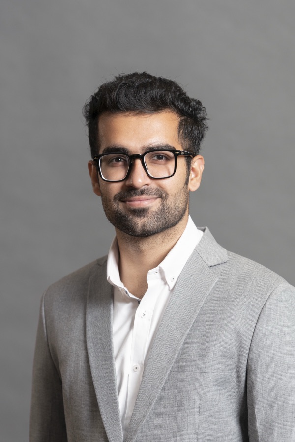

i’m a full-stack software engineer with 5+ years of experience across fintech, quant trading, enterprise mobility, food-tech, and computational social science research. i’ve architected, built, and shipped full-stack applications, run them in production, and supported the clients who depend on them. i’ve often been the person clients talk to, which means i can explain technical tradeoffs to non-engineers as well as i can build the thing.
my pov (point of view) on ai is: it’s revolutionary. and i love using it.
outside of work, i read a lot. it has taught me more about people and how the world works.
MS from University of Maryland, College Park. BS in Computer Science from FAST-NUCES, Karachi. AWS Certified Data Engineer – Associate.